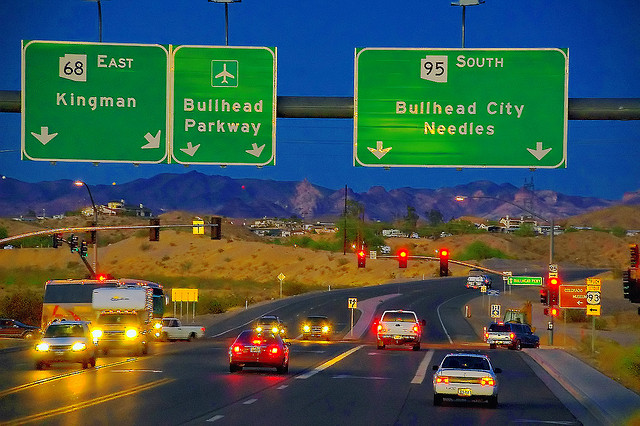

CHƯƠNG 5: BULLHEAD CITY

Sự chế ngự nguyên thuỷ của con quái vật vô cùng mạnh mẽ trong Buck, và dưới sự nghiệt ngã của đời sống, nó cứ lớn dần lên. Đó là sự sinh trưởng thầm lặng. Sự xảo trá mới mẻ này đầu độc và chế ngự Buck.
JACK LONDON,
TIẾNG GỌI NƠI HOANG DÃ
Chào mừng con quái vật nguyên thuỷ hoang dã
Và cả Tù trưởng Ahab!
Alexander Siêu lang thang
Tháng 5, 1992
CHỮ KHẮC TÌM THẤY TRONG CHIẾC BUS BỎ HOANG
BÊN BỜ SÔNG STAMPEDE
Khi máy ảnh bị hỏng và McCandless ngừng lại cái công việc chụp hình, cậu ta cũng đồng thời ngừng luôn việc ghi nhật ký, một hoạt động mà cậu trì hoãn cho đến khi tới Alaska vào năm sau đó. Do đó, không có gì đáng kể có thể kể ra về những nơi mà cậu đã lui tới sau khi rời Las Vegas vào tháng 5 năm 1991.
Trong một bức thư McCandless gửi Jan Burres, chúng ta biết rằng cậu đã dành cả tháng 7 và tháng 8 ở bờ biển Oregon, có thể là vùng phụ cận của Astoria, nơi mà cậu phàn nàn rằng “không thể nào chịu nổi sương mù và mưa.” Vào tháng 9, cậu bắt xe đi nhờ xuống đường cao tốc 101 tới California, rồi đi tiếp về hướng đông để trở lại hoang mạc. Và vào đầu tháng 10 cậu dừng lại tại Bullhead City, Arizona.
Bullhead City là một cộng đồng trong phép nghịch hợp, được hình thành vào cuối thế kỷ hai mươi. Thiếu một trung tâm đầu não, thị trấn tồn tại như một đống hỗn độn của các cơ quan hành chính địa phương và các trung tâm thương mại đan xen nhau trong phạm vi tám – chín dặm dọc bờ sông Colorado. Ngay bên kia sông là những khách sạn và sòng bạc cao chọc trời của Laughing, Nevada. Cộng đồng biệt lập của Bullhead nằm ở Mohave Valley Highway. Bốn làn đường nhựa với các trạm xăng và quầy bán đồ ăn nhanh, thầy lang và cửa hàng video, garage xe hơi và những điểm đặt bẫy khách du lịch.
Bề ngoài, Bullhead City không hề phù hợp với lý thuyết của Thoreau và Tolstoy, một hệ tư tưởng mà chẳng thể hiện điều gì ngoại trừ sự coi khinh đối với lối sống tư bản kiểu Mỹ. Nhưng McCandless lại đặc biệt yêu thích Bullhead. Có thể đó là sự tương đồng giữa cậu với đám vô sản lưu manh, những kẻ sinh sống trong những chiếc xe kéo nơi công viên và điểm cắm trại và hiệu giặt tự động; hoặc có thể cậu chỉ đơn giản yêu thích khung cảnh hoang vắng bao quanh thị trấn này.
Dù là bất kỳ khả năng nào, khi tới Bullhead City, McCandless đã từng ở đó hơn hai tháng – có lẽ là khoảng thời gian dừng chân lâu nhất của cậu kể từ khi rời Atlanta cho tới khi đến được Alaska và chuyển tới sống trong chiếc xe buýt bị bỏ hoang bên dòng sông Stampede. Trong một tấm bưu thiếp gửi Westerberg qua đường bưu điện vào tháng 10, cậu đã nói về Bullhead thế này: “Đây là một nơi lý tưởng để dừng chân vào mùa đông và có thể cuối cùng tôi sẽ ổn định và từ bỏ cuộc sống lang thang nay đây mai đó, vì Chúa. Tôi sẽ cân nhắc lại vào mùa xuân tới, vì vào thời điểm ấy tôi luôn cảm thấy chồn chân.”
Vào thời điểm viết những dòng này, cậu ta đang làm công việc toàn thời gian tại một cửa hàng McDonald, hàng ngày đi đến chỗ làm bằng xe đạp. Cậu sinh hoạt theo một phương thức đáng ngạc nhiên, bao gồm cả việc mở một tài khoản tiết kiệm ở ngân hàng địa phương.
Điều gây chú ý là, khi McCandless nộp đơn ứng tuyển vào vị trí ở McDonald, cậu ta giới thiệu mình là Chris McCandless, chứ không phải là Alex, và cung cấp số An sinh xã hội thật của mình cho người quản lý. Đấy là một sự phá bỏ vỏ bọc không tuân theo phương thức hành động thường thấy của cậu mà có thể dễ dàng đánh động tới người nhà - mặc dù sự sai sót ấy không dẫn tới kết quả nào vì vị thám tử tư mà Walt và Billie thuê đã không bắt được vết tích này.
Hai năm kể từ ngày làm việc ở Bullhead, các đồng nghiệp của cậu không nói được gì nhiều về McCandless. “Một thứ mà tôi có thể nhớ được về cậu ta là vấn đề về đôi tất”, viên trợ lý điều hành, một người đàn ông mập mạp, ba hoa tên George Dreeszen nói. “Cậu ta luôn đi giày không tất với lý do đơn giản là không chịu đựng được việc mang tất. Nhưng McDonald quy định rằng mọi nhân viên phải mang tất thích hợp mọi lúc. Có nghĩa là giày và tất. Chris tuân thủ theo quy định, nhưng ngay sau khi cậu ta hết ca làm, bang! - điều đầu tiên mà cậu ta làm là tháo tất ra. Ý tôi là điều làm ngay đầu tiên ấy. Nó dường như là một tuyên bố, như để nhắc nhở chúng tôi rằng chúng tôi không sở hữu cậu ta, tôi đoán thế. Nhưng cậu ta là một người tử tế và là nhân viên tốt. Thật sự rất đáng tin cậy”
Lori Zarza, trợ lý điều hành thứ hai, có một ấn tượng tương đối khác về McCandless. “Nói thật nhé, tôi khá ngạc nhiên về việc cậu ta được nhận vào làm ở đây,” bà nói. “Cậu ta làm được việc - phụ trách mảng nấu nướng – nhưng luôn làm rất chậm, dù trong cả thời điểm đông khách ban trưa, dù cho có bị thúc giục bao nhiêu đi nữa. Khách thì xếp hàng dài dằng dặc, còn cậu ta thì không hiểu được vì sao luôn bị tôi nhắc nhở. Câu ta không hề chịu khó xây dựng các mối quan hệ. Như thể luôn sống trong thế giới của riêng mình vậy.”
“Mặc dù vậy, cậu ta rất đáng tin cậy, ngày nào cũng có mặt, do đó không ai có thể đuổi việc cả. Họ chỉ trả công 4,25 dollar cho một giờ lao động và ở các sòng bài ngay bên kia sông thì mức lương trung bình cho một nhân viên là $6,25. Vâng, ờ, rất khó khăn trong việc giữ người.
Tôi không nghĩ cậu ta có đi lại với ai trong cửa hàng sau giờ làm việc hay gì đó. Khi chúng tôi nói chuyện, cậu ta luôn bàn về cây cối và thiên nhiên và những thứ kỳ cục như thế. Chúng tôi luôn nghĩ rằng cậu ta thiếu sót một vài kỹ năng giao tiếp nào đó.”
“Khi Chris bỏ việc,” Zarza thừa nhận, “có thể hoàn toàn là vì tôi. Lúc mới bắt đầu vào làm, cậu ta không có chỗ ở, và cậu ta tới chỗ làm mà chả tắm rửa gì. Điều này là không phù hợp với nội quy của McDonald. Nên họ phân công tôi đến nhắc nhở cậu ta cần phải tắm rửa thường xuyên hơn. Ngay khi tôi nói chuyện với cậu ta, đã có sự bất đồng giữa chúng tôi. Và khi mà các nhân viên khác - họ chỉ cố tỏ ra thân thiện, hỏi thăm rằng cậu ta có cần xà phòng hay những thứ khác không thì cậu ta phát khùng lên. Nhưng cậu ta không bao giờ thể hiện ra. Khoảng ba tuần sau đó, cậu ta bỏ việc và đi thẳng ra cửa.”
McCandless cố gắng che giấu sự thực rằng cậu đang sống như một kẻ lang thang chỉ với một chiếc ba lô. Cậu kể với các đồng nghiệp rằng đang sống tại khu Laughing bên kia sông. Bất cứ khi nào họ đề nghị đưa cậu về nhà sau giờ làm việc, cậu luôn đưa ra lí do từ chối. Thực tế là, trong suốt những tuần đầu tiên ở Bullhead, McCandles cắm trại trong sa mạc ở ngoại vi thành phố, rồi mới chuyển đến một ngôi nhà di động còn trống. Sự thay đổi sau đó, theo như một bức thư gửi cho Jan Burres, “đến theo cách này”
Một tháng sau cháu đang cạo râu trong toilet công cộng thì một ông già bước vào, và quan sát cháu, hỏi rằng có phải cháu đang “ngủ lang” không. Cháu trả lời ông ấy là có, và ông ta tiết lộ rằng ông có một cái xe móoc cũ và cháu có thể ở đó mà không mất đồng nào. Vấn đề duy nhất là ông ấy không phải là chủ của nó. Chủ nhân thật sự cho phép ông ấy ở trên đất của họ, trong một chiếc xe nhỏ hơn. Nên ông ấy yêu cầu cháu phải giữ gìn mọi thứ cẩn thận và không được gây chú ý, vì ông ấy không muốn có bất kỳ ai khác lảng vảng quanh đấy. Dù vậy, đây đúng là một cơ hội tốt vì bên trong chiếc xe rất ổn, đó là một ngôi nhà di động với đầy đủ tiện nghi. Với một số thiết bị điện có thể hoạt động được và có không gian sinh hoạt rộng rãi. Nhược điểm duy nhất là ông già Charlie đó rất lập dị và đôi khi rất khó nói chuyện với ông ấy.
Charlie vẫn sống tại địa chỉ cũ trong một chiếc xe moóc mà không hề có điện hay nước, nằm phía sau chiếc xe màu xanh - trắng lớn hơn mà McCandless từng ở. Những ngọn núi nằm phơi mình phía tây, lạnh lùng bao bọc lấy hai chiếc xe nằm kề bên nhau. Một chiếc Ford Forino yêu kiều nằm thảnh thơi trong mảnh sân bừa bộn. Rong rêu bao phủ toàn bộ chiếc xe. Mùi amoniac của nước tiểu người nồng nặc bốc lên từ phía hàng rào trúc đào.
“Chris? Chris?” Charlie hét lên, lục tung trong trí nhớ già nua của mình. «À, vâng, là nó. Vâng, tôi nhớ ra rồi.» Charlie, mặc một chiếc áo len có cổ và quần lao động, là một người đàn ông mảnh khảnh, hay hồi hộp với đôi mắt ướt và râu trắng mọc lởm chởm đầy cằm. Theo lời ông kể, McCandless từng sống trong chiếc xe moóc trong vòng một tháng.
«Một anh chàng dễ thương,» Charlie nói, «dù vậy, cậu ta không thích có quá nhiều người quanh mình. Tính khí thất thường. Cậu ta rất đàng hoàng, nhưng tôi nghĩ cậu ấy quá phức tạp – anh có hiểu ý tôi không? Cậu ta thích đọc sách của cái gã người Alaska, Jack London đó. Không bao giờ nói quá nhiều. Cậu ta hay tâm trạng, không thích bị làm phiền. Như là kiểu đang tìm kiếm thứ gì đó mà không biết rõ là thứ gì. Tôi đã từng giống như thế, nhưng rồi tôi nhận ra rằng thứ tôi cần nhất là: Tiền! Haha.”
“Nhưng như tôi nói. Alaska – vâng, cậu ta có nói về việc đến Alaska. Có thể là để tìm kiếm thứ cậu ta đang tìm kiếm tại đó. Thực sự là một chàng trai tốt, tôi rất quý cậu ấy. Dù vậy, đôi khi cậu ta rất khó hiểu. Điều đó rất tệ. Khi ra đi gần thời điểm Giáng sinh, cậu ta đưa tôi 50 dollar và một bao thuốc lá vì đã cho phép cậu ta ở đó. Đấy chính điểm tử tế nơi cậu ta.”
Vào cuối tháng 11, McCandless gửi một tấm bưu thiếp cho Jan Burres từ một bưu điện ở Niland, một thị trấn nhỏ ở thung lũng Imperial của California. “Tấm thiệp mà chúng tôi nhận được từ Niland là bức thư đầu tiên có địa chỉ hồi âm sau một tháng dài,” Burres nhớ lại. “Vì vậy, tôi trả lời ngay lập tức và thông báo sẽ đến Bullhead thăm cậu ấy vào cuối tuần sau đó, không xa nơi chúng tôi đang ở là bao.”
McCandless kinh ngạc khi nhận được hồi âm của Jan. “Cháu rất vui vì thấy hai người vẫn còn sống mạnh,” cậu ta trả lời trong một bức thư đề ngày 9/12/1991.
Cám ơn vì tấm thiệp Giáng sinh. Thật là thích khi nghĩ về thời khắc này trong năm… Cháu rất háo hức khi biết tin hai người sẽ tới thăm, hãy đến đây bất cứ lúc nào có thể. Thật là tuyệt vì ta có thể gặp lại nhau sau một năm rưỡi.
Cậu ta kết thúc bức thư bằng một sơ đồ chỉ dẫn chi tiết cách tìm ra chiếc xe moóc ở Bullhead trên đường Baseline Road.
Tuy nhiên, bốn ngày sau khi nhận được thư, khi Jan và Bob - bạn trai của bà, đang chuẩn bị lên đường. Jan quay trở lại trại vào buổi tối và nhận ra có một “chiếc ba lô to đặt bên ngoài cửa của chúng tôi. Tôi nhận ra chiếc ba lô đó là của Alex. Chú chó Sunni của chúng tôi nhận ra hơi của cậu ta trước tôi. Nó rất thích Alex, nhưng tôi khá ngạc nhiên vì nó vẫn còn nhớ, khi con chó tìm ra cậu ta nó mừng đến phát cuồng lên.” McCandless giải thích với Burres rằng cậu cảm thấy chán ngán Bullhead, mệt mởi vì phải chờ đợi; mệt mỏi vì lũ người giả tạo mà cậu làm việc cùng, và quyết định cuốn xéo khỏi đó ngay tức khắc.
Jan và Bob ở cách Niland khoảng ba dặm, tại nơi mà người dân địa phương gọi là Slabs, một căn cứ bỏ hoang của thuỷ quân lục chiến, đã bị san phẳng và chỉ còn trơ lại những khối nền bê tông trống rỗng nằm rải rác khắp hoang mạc. Vào tháng 11, khi tiết trời trở lạnh trên khắp đất nước, khoảng năm ngàn người nghiện và sống vô mục đích và du thử du thực tập hợp tại cái thế giới khác biệt này, thu xếp cuộc sống khiêm nhường dưới ánh mặt trời. Khu vực Slabs được xem là trung tâm của một xã hội đông đúc những kiểu người sống nay đây mai đó theo thời vụ - một kiểu văn hoá của sự chịu đựng, mệt mỏi vì lái xe đường trường kết hợp với những kẻ về vườn, sự đầy ải, nghèo khổ, và dân thất nghiệp thường xuyên. Cấu tạo nên cộng đồng nhỏ bé này gồm có đàn ông và đà bà và trẻ em ở mọi lứa tuổi, những con người lảng tránh các cơ quan thu phí và thuế, những mối quan hệ phức tạp, giới pháp luật hay IRS, mùa đông ở Ohio và sự lấn át của giới trung lưu.
McCandless tới Slabs đúng vào lúc có một hội chợ lớn đang diễn ra tại đó. Burres cũng tham gia bán hàng, bà dựng một cái bàn nhỏ bày bán những món đồ rẻ tiền, mà hầu hết trong số chúng đã qua sử dụng, và McCandless xung phong phụ trách việc bán sách.
“Cậu ấy giúp đỡ tôi rất nhiều,” Burres bày tỏ sự biết ơn. “Cậu ấy giúp tôi trông hàng khi tôi phải chạy loanh quoanh, sắp xếp sách và bán được rất nhiều. Cậu ấy dường như rất thích thú đối với công việc này. Alex thực sự thông hiểu những tác phẩm kinh điển: Dickens, H. G. Wells, Mark Taiwn, Jack London. London là tác giả yêu thích của cậu ấy. Cậu luôn cố gắng thuyết phục những người qua đường rằng họ nên đọc Tiếng Gọi Nơi Hoang Dã.”
McCandless đã mê mẩn London từ thưở thiếu thời. Sự phán xét gay gắt của London về xã hội vật chất, sự say mê của ông trước thế giới nguyên sơ, việc ông tôn vinh lối sống cùng khổ - tất cả những điều này đều phản chiếu trong sự nhiệt tình nơi McCandless. Bị thôi miên bởi lối miêu tả khoa trương đời sống Alaska và Yukon, McCandless đã đọc đi đọc lại những tác phẩm Tiếng Gọi Nơi Hoang Dã, Nanh Trắng, Nhóm Lửa, Chuyến Du Hành Tới Phương Bắc, Mưu Kế Của Porportuck. Cậu ta bị mê hoặc bởi những câu chuyện đó mà quên đi mất một điều rằng chúng chỉ là những tác phẩm hư cấu, là sản phẩm của trí tưởng tượng mà phần nhiều xuất phát từ sự lãng mạng và nhạy cảm nơi London hơn là những sự kiện thực tế nơi đời sống hoang dã. McCandless thực sự đã đánh giá quá cao yếu tố London chỉ dành duy nhất một mùa đông sống tại phương Bắc và ông ta tự kết thúc đời mình ở California vào độ tuổi 40. Thực tế London là một gã nghiện rượu, béo phì và đáng thương hại, duy trì kiểu tĩnh tại nhàm chán để tạo ra những khung trời lý tưởng trong các câu chuyện của mình.
Trong số các công dân của Niland Slabs có một cô gái mười bảy tuổi tên Tracy, cô bé đã phải lòng McCandless trong suốt thời gian cậu ta ở lại đó. “Cô bé rất đáng yêu,” Burres nói, “là con gái của một cặp đôi sống cách chỗ chúng tôi khoảng bốn chiếc xe. Và Tracy tội nghiệp đã nảy sinh thứ tình cảm mê mệt vô vọng đối với Alex. Trong suốt quãng thời gian ở Niland, cô bé luôn quanh quẩn ở bên và cố gắng liếc mắt đưa tình với cậu ấy, luôn nhờ vả tôi thuyết phục Alex chịu khó đi dạo với cô bé. Alex đối xử với cô bé rất tốt, nhưng cô bé quá trẻ so với cậu ấy. Cậu ấy không thể có một mối quan hệ nghiêm túc đối với cô bé. Vì cậu ta biết có thể sẽ làm cô bé đau khổ trong chỉ một tuần.”
Dù cho McCandless đã rất cố gắng cự tuyệt Tracy, Burres nói rõ ràng rằng cậu ta không cố gắng lẩn tránh cô bé: “Cậu ấy đã có một khoảng thời gian thảnh thơi khi ở bên mọi người, thực sự là rất hoà đồng. Trong chợ phiên, cậu ta cứ nói và nói và nói với bất kỳ ai đi qua. Cậu ấy đã gặp tới sáu đến bảy tá người ở Niland, và tỏ ra thân thiện với tất cả bọn họ. Cậu ấy đôi lúc cần được yên tĩnh một mình, nhưng không phải là một nhà ẩn dật. Cậu ấy thực hiện hoạt động giao tiếp xã hội rất nhiều: Đôi khi tôi có suy nghĩ rằng cậu ta đang gom góp sự thân thiện cho quãng thời gian mà cậu ta biết rằng sẽ không có ai bên mình.”
McCandless đặc biệt quan tâm tới Burres, tròng ghẹo bà bất cứ khi nào có cơ hội. “Cậu ta thích trêu chọc và hành hạ tôi,” bà kể lại. “Khi tôi ra phía sau phơi quần áo trên chiếc dây phơi được căng giữa hai chiếc xe, cậu ta tấn công tôi bằng những cái cặp quần áo. Cậu ta hiếu động như một đứa trẻ con vậy. Tôi có nuôi mấy con cún, và cậu ta thường giấu chúng trong rổ quần áo để cho chúng chạy loạn xị và sủa nhặng lên. Cậu ta cứ làm như vậy cho đến khi tôi phát cáu và phải quát lên. Nhưng thực ra cậu ấy rất tốt với lũ chó. Chúng luôn theo chân cậu, đòi cậu ta, và thích được ngủ cùng cậu ta. Alex thực sự có sức hút đối với thú vật.”
Một buổi chiều khi McCandless đang dựng chiếc bàn bầy sách cho buổi chợ phiên, một ai đó để lại chiếc đàn organ và nhờ Burres bán hộ. “Alex cầm lấy nó và giải trí cho mọi người suốt cả ngày hôm đó”, bà nói, “cậu ấy có chất giọng tuyệt vời. Cậu ấy thu hút cả một đám đông khán giả. Cho tới khi đó tôi chưa bao giờ biết được cậu ấy có thể chơi nhạc.”
McCandless trao đổi thường xuyên với cư dân Slabs về kế hoạch Alaska của mình. Cậu luyện tập môn thể dục mềm dẻo vào mỗi sáng để chuẩn bị thể chất cho sự khắc nghiệt nơi hoang dã và bàn luận những chiến lược sinh tồn với Bob, một người có khả năng tự sinh tự lập.
“Về phần mình”, Burres nói, “tôi cho rằng Alex mất trí khi kể với chúng tôi về hành trình vĩ đại đến Alaska. Nhưng cậu ấy thực sự rất hào hứng về nó. Cậu ta không ngừng nói về chuyến đi.”
Mặc dù chịu ảnh hưởng lớn của Burres, McCandless không bao giờ kể với bà về gia đình mình. “Tôi hỏi cậu ta,” Burres nói, “Cậu có thông báo với mọi người trong gia đình về nơi cậu sắp đến không? Mẹ cậu có biết là cậu sẽ tới Alaska không? Bố cậu có biết không? Nhưng cậu ấy không trả lời. Cậu ta chỉ giương mắt nhìn tôi, bực bội, bảo tôi thôi dạy đời cậu ta đi. Bob sẽ nói, ‘Để thằng bé yên. Cậu ta lớn rồi.’ Tôi sẽ tiếp tục lải nhải như thế cho tới khi cậu ta đổi đề tài - bởi những gì đã xảy ra giữa tôi với con trai mình. Nó đang ở đâu đó ngoài kia, và tôi muốn có một ai đó cũng chăm sóc cho nó như điều tôi đã làm cho Alex."
Ngày Chủ nhật trước khi McCandless rời Niland, cậu ngồi xem một trận đấu tranh vé vớt giải NFL trên TV trong chiếc xe mooc của Burres, bà nhận thấy cậu ta cổ vũ rất nhiệt tình cho đội Washington Redskins. «Tôi hỏi cậu ấy rằng có phải cậu là dân Washington không," bà kể. "Và cậu ấy trả lời, ‘Vâng, đúng thế.’ Đấy là điều duy nhất cậu ấy hé lộ về xuất thân của mình."
Ngày thứ Tư sau đó, McCandless thông báo đã đến thời điểm ra đi. Cậu nói rằng cậu cần tới bưu điện của thành phố Salton, cách Niland 50 dặm, là nơi cậu nhận thù lao còn lại của chi nhánh McDonald Bullhead. Cậu đồng ý để Burres đưa mình tới đó, nhưng khi bà ép cậu nhận một chút lộ phí đi đường vì đã giúp đỡ bà nhiệt tình trong suốt đợt hội chợ, bà kể lại, "Cậu ấy tỏ ra bực bội. Tôi bảo cậu ấy, ‘Nào, cậu cần tiền để xoay xở trong thế giới này,’ nhưng cậu ấy kiên quyết từ chối. Cuối cùng, tôi thuyết phục cậu ấy nhận con dao Thuỵ Sĩ và một vài cái bao đeo dao; tôi thuyết phục rằng nó sẽ rất hữu ích ở Alaska và cậu có thể dùng chúng để trao đổi trên đường."
Sau một hồi tranh luận nảy lửa, Burres cũng khiến Alex nhận một vài chiếc quần lót và quần áo ấm mà bà cho rằng cậu sẽ cần tới chúng khi đến Alaska. «Cậu ấy nhận lấy chúng chỉ để làm im miệng tôi,» bà cười, «nhưng sau ngày cậu ấy rời đi, tôi tìm ra hầu như tất cả những thứ đó trong khoang để đồ. Cậu ta lôi nó ra khỏi ba lô và giấu dưới ghế ngồi khi chúng tôi không để ý. Alex là một cậu nhóc tuyệt vời, nhưng có những lúc cậu ta khiến tôi phát điên lên được.»
Mặc dù Burres lo lắng về McCandless, bà cho rằng cậu sẽ trở về toàn vẹn. "Tôi cứ nghĩ cậu ấy rồi sẽ ổn," bà nói. "Cậu ấy thông minh. Cậu ta luận ra cả cách lái ca nô xuống Mexico, cách đi tàu lậu vé, làm thế nào để kiếm được một chỗ ngủ giữa lòng thành phố. Cậu ta tự luận ra tất cả những điều ấy, và tôi chắc rằng cậu ấy cũng sẽ an toàn bước ra khỏi Alaska."
Comments